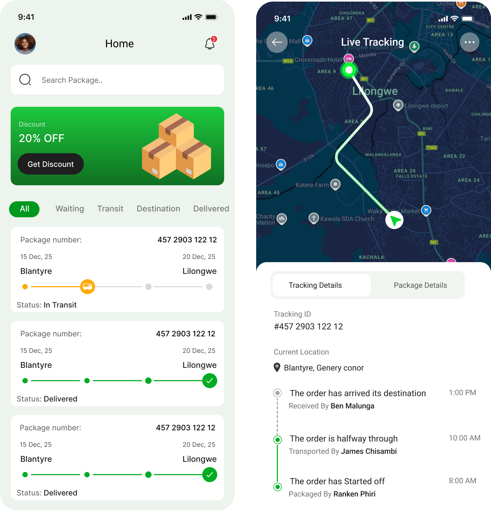
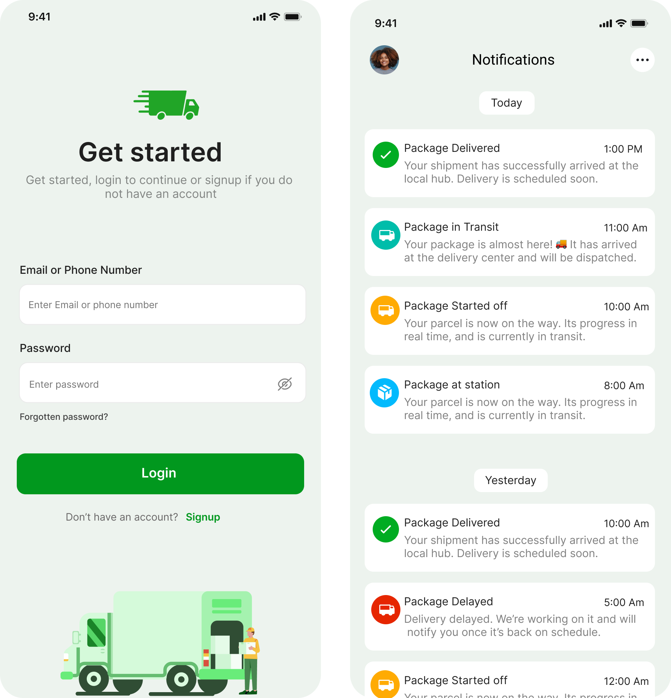
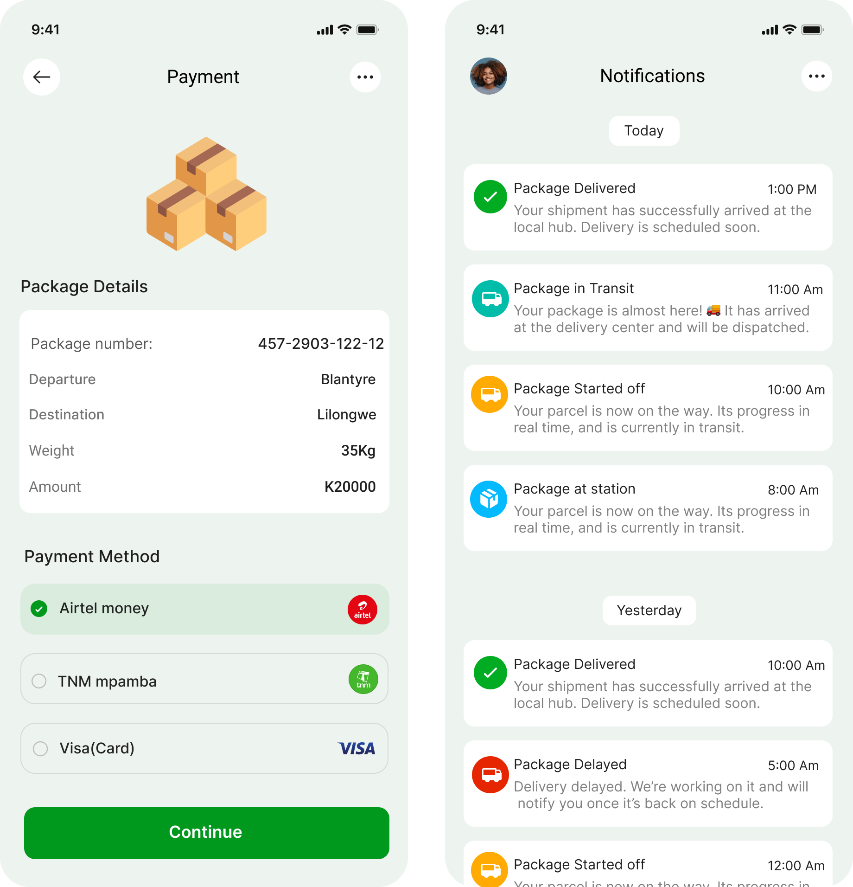
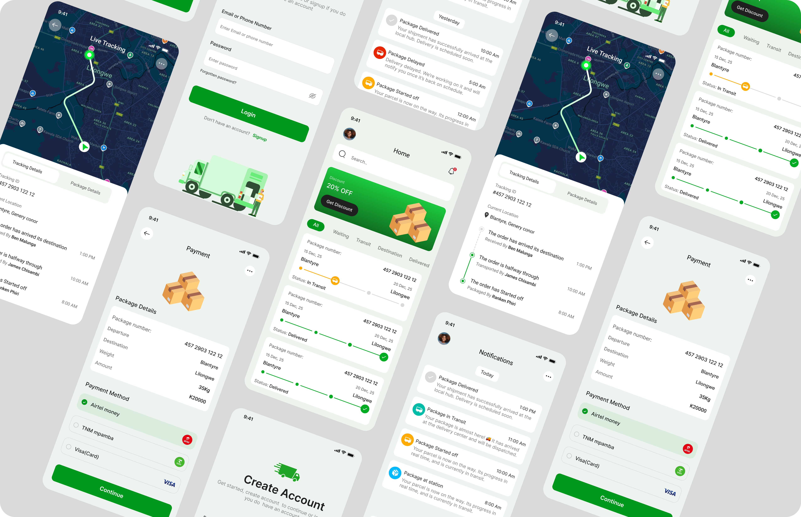

Kwacha Wise App Design

This concept explores a modern personal finance analytics experience designed in Figma. The interface highlights total income, total expenditure, and current balance at a glance, backed by a clear monthly bar chart and quick performance indicators. A structured transactions feed makes it easy to review subscriptions, transfers, and payment status.



